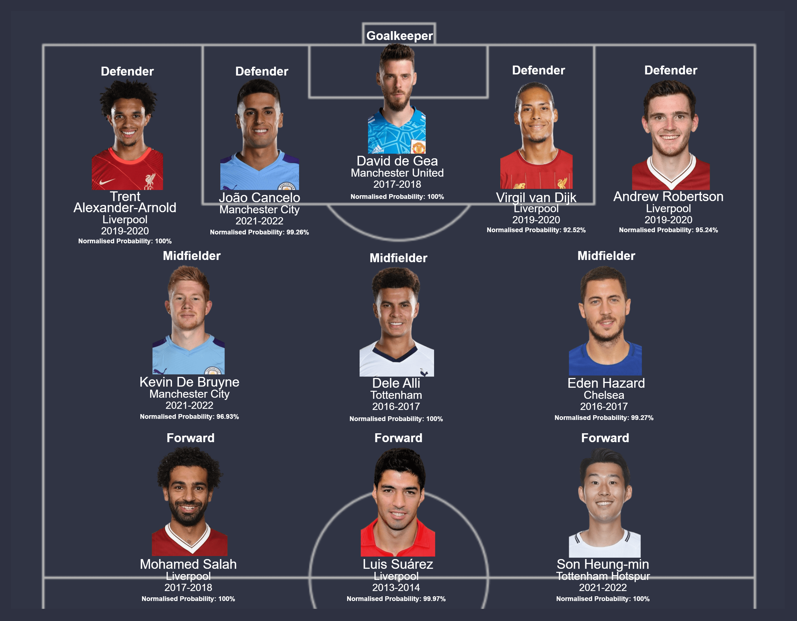
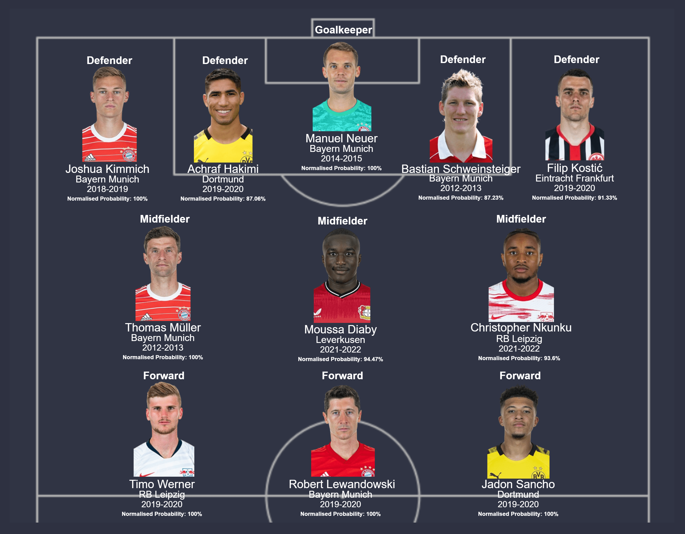
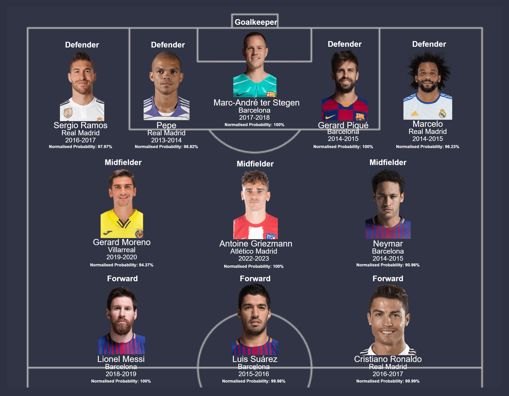
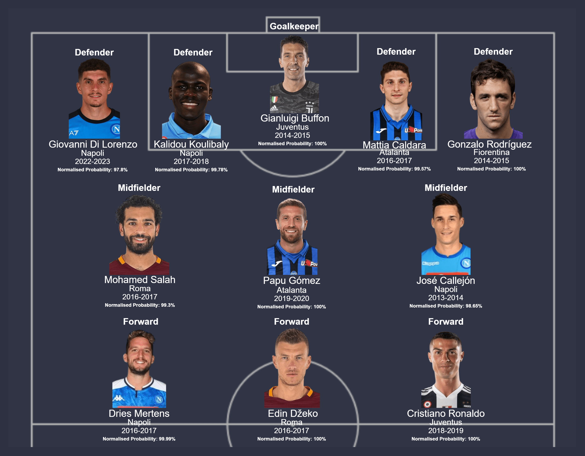
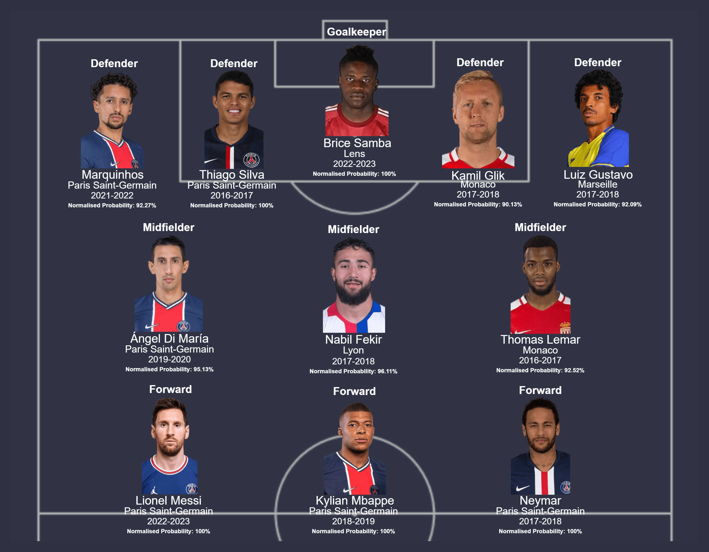

BSc (Hons) Data Science Final Project | COBScDS221P-008
Best XIs by League
A compilation of best XIs based on best individual seasons in each league as chosen by the models.
Introduction and rules
Under this section, best XIs of footballers chosen from each of the big-five leagues by the respective models would be showcased. Here, players who received the best possible probabilities of being included in the FTOTS (i.e. by the models) over the seasons under consideration (2011-2012 to 2022-2023) would be displayed. Accordingly, the following rules apply to these chosen teams:
- Players are chosen on the basis of the probability of inclusion provided to each instance by the built models. Accordingly, the 'top n' players with the highest probabilities of inclusion (by playing position) thus provided would be included in the chosen team.
- Each player can be selected only once per team. This means that in instances where more than one season of a player is eligible to be included, only the instance with the highest probability of inclusion would be considered, with the rest replaced by other players in the list. Also, in instances where a player is eligible to be selected for the team on more than one position, the instance included would be the one with the highest probability of inclusion.
- The classic 4-3-3 formation in football would be utilised for team selection. Accordingly, for each of the big-five leagues, one goalkeeper, four defenders, three midfielders and three forwards would be selected.
Note: The normalised probability provided here refers to the probability of inclusion of the respective player normalised with the maximum probability of inclusion provided by the models to a player in the same league with the same playing position.
 best XI
best XI

Team-wise representation in the Premier League best XI:
| Team | Number of Players |
|---|---|
| Liverpool | 5 |
| Manchester City | 2 |
| Tottenham Hotspur | 2 |
| Chelsea | 1 |
| Manchester United | 1 |
best XI

Team-wise representation in the Bundesliga best XI:
| Team | Number of Players |
|---|---|
| Bayern Munich | 5 |
| Dortmund | 2 |
| RB Leipzig | 2 |
| Eintracht Frankfurt | 1 |
| Leverkusen | 1 |
best XI

Team-wise representation in the La Liga best XI:
| Team | Number of Players |
|---|---|
| Barcelona | 5 |
| Real Madrid | 4 |
| Atlético Madrid | 1 |
| Villarreal | 1 |
best XI

Team-wise representation in the Serie A best XI:
| Team | Number of Players |
|---|---|
| Napoli | 4 |
| Atalanta | 2 |
| Juventus | 2 |
| Roma | 2 |
| Fiorentina | 1 |
best XI

Team-wise representation in the Ligue 1 best XI:
| Team | Number of Players |
|---|---|
| Paris Saint-Germain | 6 |
| Monaco | 2 |
| Lens | 1 |
| Lyon | 1 |
| Marseille | 1 |